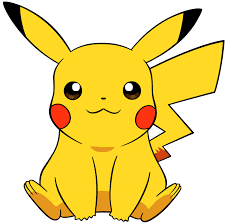

Pokémon apparut la toute première fois en 1996 au Japon comme jeu sur la console portable Gameboy. Cette franchise populaire continue de croître jusqu'aujourd'hui, donnant naissance à
plusieurs produits tels que des jouets, des jeux de cartes, etc. Deux de ces produits vont être discutés sur ce site : Les jeux et le dessin animé.
Le créateur de Pokémon se nomme 田尻 智 (Satoshi Tajiri). Pokémon a été développé par Game Freak et publié par Nintendo.
un exemple
la toute première version de Pokémon.
Qu'est-ce qu'un Pokémon?
À l'origine, le jeu ne s'appelait ni Pokémon ni une de ses variantes. Pokémon fut officiellement appelé ポケットモンスタ－ (Poketto Monstaa)
Litérallement Pocket Monster. À cause de certains Copyrights sur ce nom-là, il fut renommé Pokémon dans le reste du monde. Pokémon: Poké(Pocket) + Mon(Monster).
Comme l'indique son nom original, un pokémon est un monstre que l'on peut mettre dans notre poche.
 Voici le Pokémon Pikachu.
Présentement (2016), il existe 721 Pokémon différents, bien qu'en realité il y en a beaucoup moins si l'on exclue les formes pré-évolutives
Les concepts
Pokéball
La pokéball est l'objet utilisé dans l'Univers de Pokémon pour capturer ces monstres. C'est une balle qui enferme les monstres dans un espace très étroit, de tel sorte qu'il
est possible de les mettre dans nos poches, d'òu le nom original de la franchise. Il en existe de plusieurs sortes.
Pokédex
C'est l'encyclopedie ou la base de données des Pokémon. Cet appareil envois des informations concernant un Pokémon. Le Pokédex peut ou non être déjà rempli. Dans le dessin animé, il est déjà rempli. Dans le jeu, il faut le remplir en capturant des Pokémon.
Le design du Pokédex est basé sur la dernière console portable qui était disponible quand le jeu est sorti.
Entraineur ou dresseur
C'est le nom qu'on donne aux personnes qui capturent les Pokémon dans l'Univers de Pokémon.